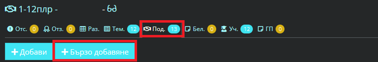
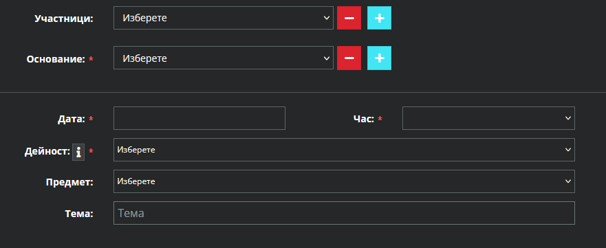

Школо - назначаване на педагогически специалист (логопед, ресурсен, психолог)
След подаден Образец 1
https://app.shkolo.bg -> Администрация
-> Потребители -> Създаване на профил:
-> Добавяне на роля -> Учител и Логопед/психолог/ресурсен учител
-> Добавяне на Длъжност -> Същата като в НЕИСПУО;
-> Добавяне на Образование -> Същото като в НЕИСПУО.
https://app.shkolo.bg -> Администрация
-> Предмети -> Добавяне към предметите:
-> Други дейности по обучение, социализация, възпитание и отглеждане на децата
-> Учители -> Добави учител
-> Подкрепа за личностно развитие
-> Учители -> Добави учител
-> (само за психолог) Работа с ученици и родители ДПЛР-ПСР/ ОПЛР-ПН
-> Учители -> Добавяне на психолог
https://app.shkolo.bg -> Администрация
-> Паралелки -> ДПЛР-Ресурсен или ПЛР-психолог/логопед -> Редакция ->
-> Добавяне на педагогически специалист
-> Предмети и учители -> Избиране на педагогически специалист
- Добавяне на седмично разписание с два вида подкрепа, според графика на специалиста на хартиен носител:
- ДПЛР - Дейности за подкрепа за личностно развитие - за работа с конкретни ученици;
- ОПЛР - Обща подкрепа за личностно развитие - за административни дейности или работа с цели класове;
Виж инструкция за добавяне на седмично разписание
- Учителите си вземат часовете след добавеното разписание от:
- Дневник -> Подкрепа -> ПЛР-Психолог/Логопед или ДПЛР-Ресурсен учител ->
-> Подкрепа -> Бързо добавяне

- избиране на участници - подкрепа за конкретен ученик или работа с цял клас/паралелка;
- избиране на основание за подкрепа;
- избиране на дата и час на дейността;
- избиране на дейност;
- избиране на предмет - ОПЛР/ПН или ДПЛР/ПСР
- добавяне на тема. Изписва се ръчно, не може да се добавят тематични разпределения.

Готово! Вече часовете излизат с информация за работа с конкретни ученици или паралелки.